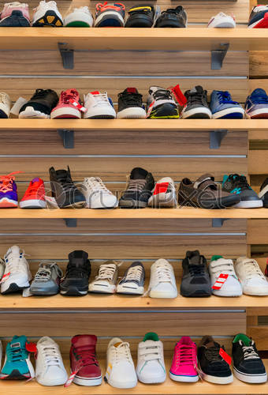

TENIS DEPORTIVOS
Los tenis deportivos, también conocidos como zapatillas deportivas, son un tipo de calzado diseñado principalmente para la práctica de deportes y actividades físicas, aunque también se utilizan para uso diario. Se caracterizan por tener una suela flexible de goma o material sintético y una parte superior hecha de cuero, tela o materiales sintéticos El calzado deportivo o zapatillas de deporte es un tipo de calzado que se utiliza para realizar distintos tipos de deporte. Generalmente posee un cuerpo fabricado en piel, lona y/o materiales sintéticos, y una suela de caucho que ofrece una mayor adherencia, así como flexibilidad. Cada uno de los eventos a los que asistimos tienen un tipo de atuendo a utilizar, y la práctica deportiva no se queda atrás, elegir buenas prendas y calzado es necesario. Es por ello por lo que es importante que usemos calzado adecuado para este tipo de prácticas, puesto que su diseño está creado exclusivamente para fines deportivos. Existen zapatillas de mujer y de hombre, adaptadas a cada talla y deporte.
Las zapatillas están hechas de compuestos flexibles, típicamente presentando una suela única hecha de goma densa. Mientras el diseño original era básico, los fabricantes han ido adaptando desde entonces las zapatillas para usos más concretos. Un ejemplo de este es la zapatilla con clavos desarrollada para carreras en pista. Algunas de estas zapatillas están fabricadas en medidas inusualmente grandes para atletas con pies grandes.Durante el periodo de entreguerras, los zapatos atléticos empezaron a ser comercializados para deportes diferentes, y se hicieron disponibles diseños diferenciados tanto para hombres como para mujeres. Las zapatillas fueron utilizadas por atletas que competían en las olimpiadas, ayudando a popularizarlas entre el público general.
En 1936, una marca francesa, Spring Court, comercializó la primera zapatilla de tenis de lona incorporando ocho canales de ventilación sobre una suela de goma natural vulcanizada.Los atributos de un zapato deportivo incluyen una suela flexible, dibujo apropiado para la función, y capacidad de absorber impactos. Como la industria y los diseños se han expandido, el término ''zapatillas de deporte'' está basado más en el diseño de la parte inferior del calzado que en la estética de la parte superior del mismo. Hoy los diseños incluyen sandalias, merceditas, e incluso estilos elevados propios para carrera, danza y salto.En La Valenciana Calzados llevamos especializándonos en la venta de todo tipo de zapatos y zapatillas desde hace más de 70 años, y concretamente disponemos de un catálogo muy amplio de calzado orientado al deporte, incluyendo las mejores marcas para las actividades de montaña. Si eres un aficionado a salir a correr, hacer senderismo o sumarle una mayor dosis de aventura a tus salidas y estás descubriendo el trekking o el trail running, en este artículo te contamos algunos puntos que debes considerar para acertar con tus zapatillas.
